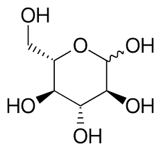

The Calvin Cycle
The Calvin Cycle, or the dark reactions of photosynthesis, are a crucial part of photosynthesis, which is how plants and some other organisms convert light energy into chemical energy in the form of glucose. Glucose is a carbohydrate that serves as an energy storage molecule for the plant. Glucose can be used for various metabolic processes within the plant, providing energy for growth, reproduction, and other essential functions. Additionally, glucose is a fundamental source of energy for many heterotrophic organisms that consume plants and plant products.
